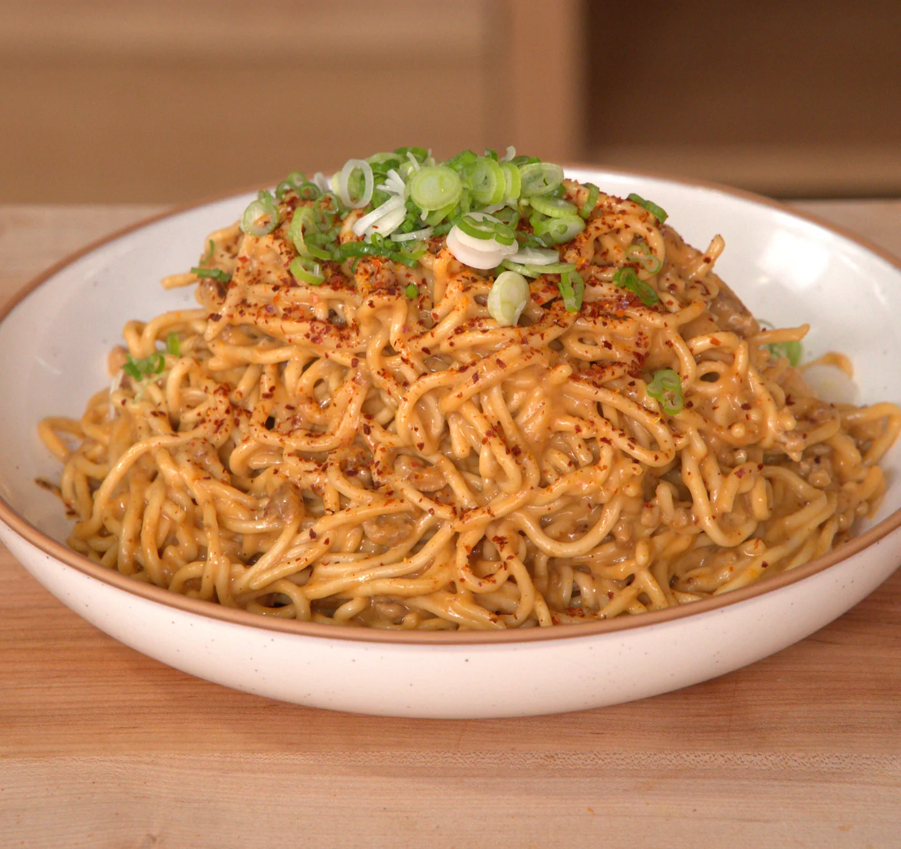

Dan Dan Noodles

The most comforting noodles of all time
I used to make this for myself all the time as a teenager.
If you're someone who doesn't cook because you have no time to relax, this recipe is perfect for you.
And like all my other recipes, this recipe won't cost you much either.
Ingredients
- ½ cup (125g) creamy peanut butter
- ⅓ cup (79ml) hot water, plus more as needed
- 1 tablespoon (12g) sugar
- 1 teaspoon (6g) gochugaru flakes, plus more for garnish
- 1 tablespoon (15ml) rice vinegar
- 1 tablespoon (15ml) aged soy sauce
- 1 tablespoon (15ml) mirin
- 3 Package (555g) Prima Taste Laksa La Mian Ramen (use all of the noodles and 1-3 seasoning packets or to taste)
- 1 tablespoon (15ml) vegetable Oil
- ¼ lb (113g) ground pork
- 2 cloves garlic, finely chopped
- 1 shallot, finely chopped
- 1 green onion, thinly sliced for garnish
- Soy Sauce, to taste
Steps
- In a medium mixing bowl, mix the peanut butter, hot water, sugar, gochugaru, rice vinegar, soy sauce and mirin, and set aside.
- Bring a large pot of water to a boil.
- Meanwhile, in a large sauté pan set over medium-high heat, add the vegetable oil and once hot,
add the pork and sear until cooked through, about 5-6 minutes.
Once the pork is cooked, add your garlic and shallots, and cook until shallots begin to soften 2-3 minutes.
Turn off the heat.
- Cook the noodles in the boiling water and then drain.
- Bring the pan with your pork back to medium-high heat and add the noodles to the plan. Add the Laksa seasoning packets (paste and powder) to taste.
Add in the sauce mixture to coat the noodles and pork, check for seasoning again, and soy sauce to taste.
- Plate and garnish with green onion and gochugaru. Serve and enjoy.
Home